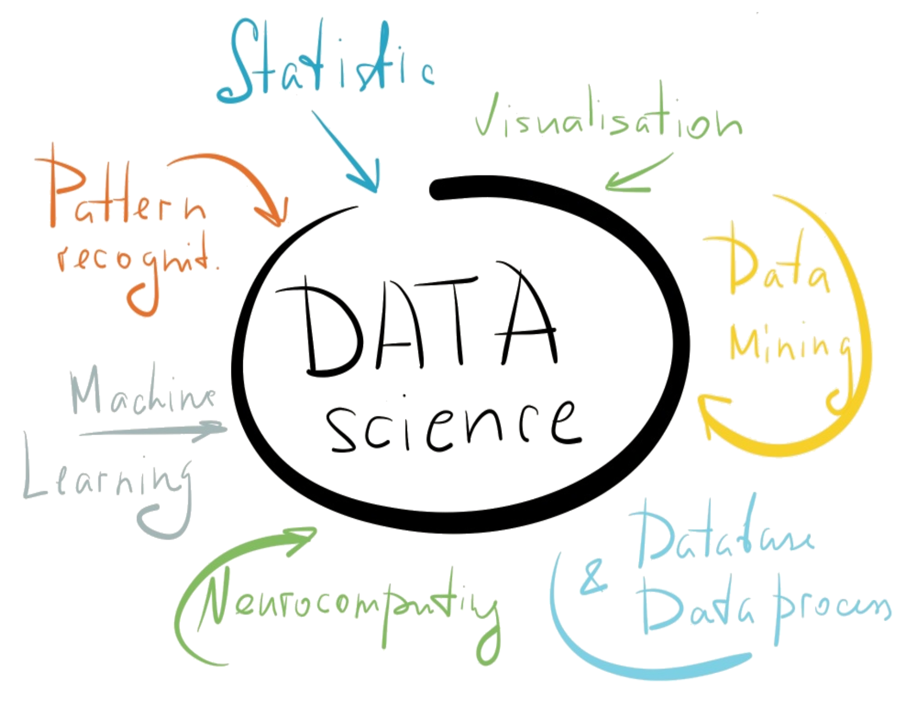
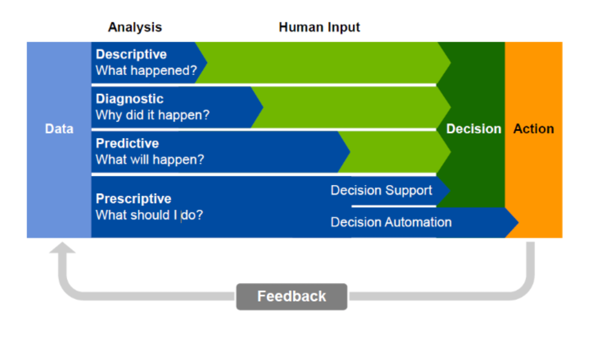
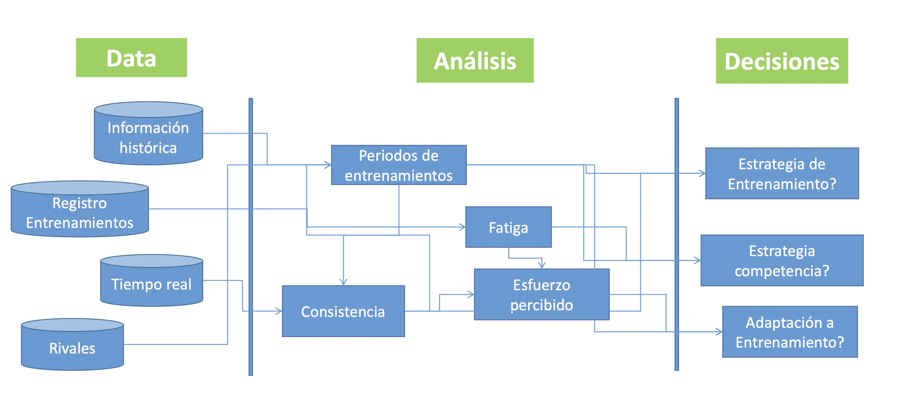
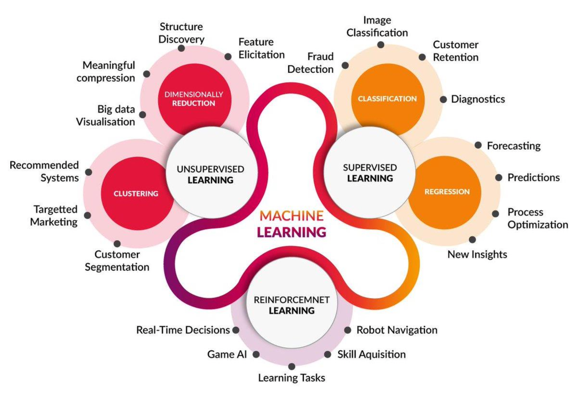
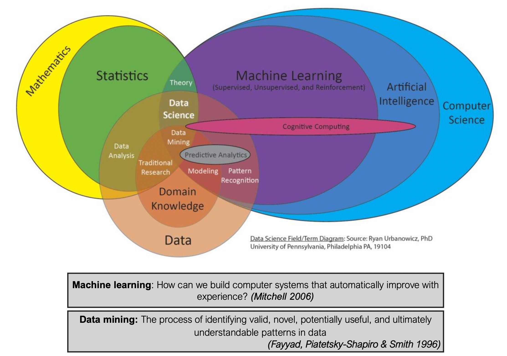

Introducción
Machine Learning para Data Science
Objetivos del curso
- Identificar elementos clave de ciencia de datos
- Comprender cómo interactúan los elementos algorítmicos para afectar el rendimiento
- Comprender cómo elegir algoritmos para diferentes tareas de análisis
- Analizar los datos de una manera exploratoria y específica
- Implementar y aplicar algoritmos básicos para el aprendizaje supervisado y sin supervisión
- Evaluar con precisión el rendimiento de los algoritmos.
¿Qué es Data Science?

- Analytics:
- Uso de datos y métodos cuantitativos para mejorar la toma de decisiones
Niveles de Información

Flujos de Información

Niveles de IA
- Sistemas automáticos
- Redes Neuronales Artificiales
- Robótica Cognitiva
Tipos de aprendizaje automático

Esquema conceptual
